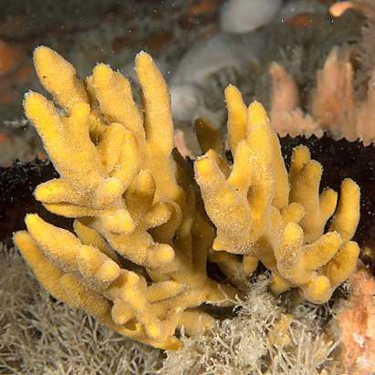

Рассмотрим некоторых представителей этой категории.
Homaxinella subdola.
Морская губка из отряда Suberitida класса обыкновенных губок. Имеет разветвлённую, часто стебельчатую форму. Толщина ветвей 2—6 мм, высота губки до 20 см. Она гибкая и прочная, с гладкой ровной поверхностью оранжевого или желтоватого цвета. Встречается на глубинах от 22 до 245 м в Тихом океане в Японском, Охотском и Беринговом морях, также у Курильских островов и в северной части Атлантического океана.
